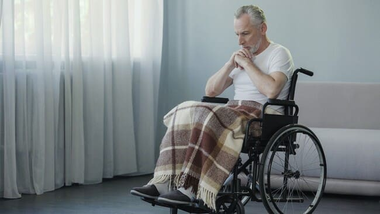
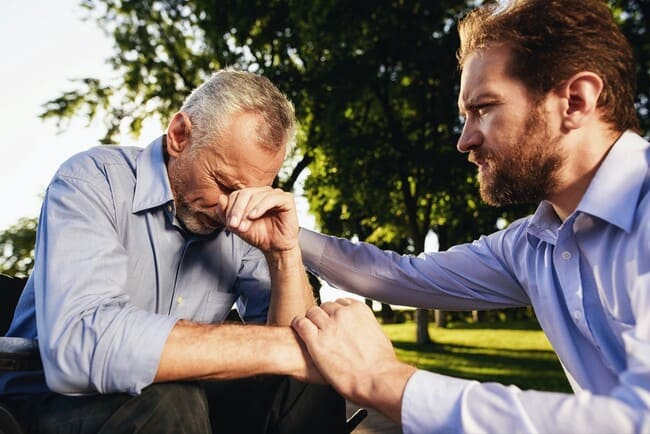
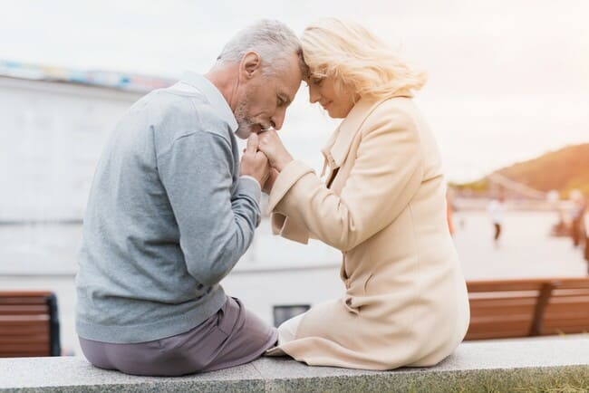
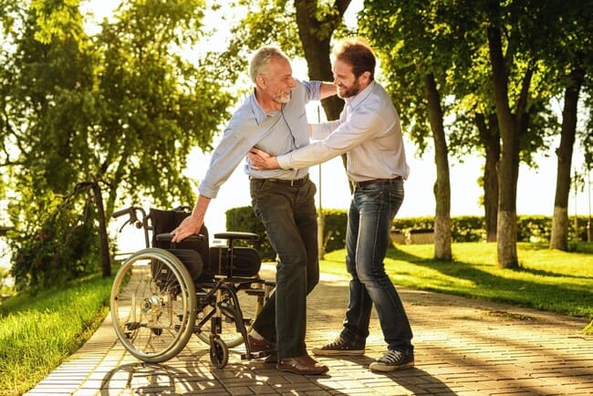
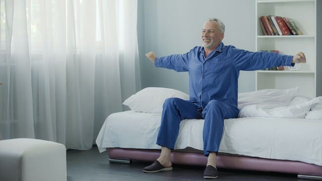

Šis formulės atkūrėjas gali sutaupyti jūsų laiko ir pinigų!
Dėl problemų su sąnariais tapau
nedarbingas.
Bet man pavyko atsigauti!
Vaistažolių preparatas mane vėl pastatė ant kojų!
Aš buvau sveikas ir aktyvus žmogus. Bet problemos su sąnariais pakeitė mano gyvenimą. Per
trumpą laiką, aš buvau prikaustytas prie vežimėlio. Bet man pavyko rasti tai, kas padeda
atsigauti ir sugeba atkurti žmonių, turinčių tų pačių problemų, judrumą ir atleisti juos nuo
skausmingų pojūčių.

Per trumpą laiką sąnarių problemos padarė mane nekompetentingu žmogumi ... Aš buvau
imobilizuotas dėl kelio skausmo!
Mano vardas Gregorijus Aronas. Man 57 metai. Tik neseniai susidūriau su problemomis, kurias lydi
mažas sąnarių judrumas ir skausmas. Anksčiau aš net ne maniau, kad tai gali būti taip rimta.
Neįsivaizdavau savęs vežimėlyje, buvau įsitikinęs savo fizine jėga ir gera sveikata. Bet
viskas pasikeitė, dėl skausmo sąnariuose.
Ši problema mane ištiko staiga. Ryte išėjau pasivaikščioti į parką ir pajutau aštrų skausmą
keliuose. Atrodė, ji visiškai persmelkia mane ir neduoda padaryti net žingsnio. Aš
nesuteikiau tam reikšmės. Aš laukiau porą minučių, skausmas praėjo ir aš tęsiau. Ir anksčiau
buvo skausmų, nemalonių pojūčių, bet dažniausiai viskas išnyko be jokios pagalbos. Tačiau šį
kartą buvo kitaip.
Aš nusprendžiau, kad man tiesiog reikia poilsio. Atšauktos treniruotės ir bėgiojimas, pradėjau
daugiau laiko praleisti namuose. Aš maniau, kad tai yra dėl per didelės apkrovos
sąnariams. Neskubėjau bėgti pas specialistus. Aš nusprendžiau tiesiog atsikrauti kelius
ir šiek tiek pailsėti. Tačiau po kelių dienų skausmas pradėjo stiprėti. Pradėjau naudoti skausmą
malšinančius kremus ir jie nepadėjo. Buvo taip, kad man buvo sunku išlipti iš kėdės. Ir laikui
bėgant aš visai nustojau lipti. Sūnus man atnešė vežimėlį, kad galėčiau judėti po butą. Aš
tapau imobilizuotas!

Man niekas nepadėjo. Atsisėdau į invalido vežimėlį ...
Man ne padėjo, nei tepalai, nei
priemonės iš vaistinės
Du kartus per dieną vartojau stiprius skausmą malšinančius vaistus. Jie padėjo malšinti skausmą,
bet tik kelias valandas. Tada jis vėl grįždavo. Naktimis nemiegojau, nustojau eiti į lauką, o
mano aktyvus gyvenimo būdas praeityje virto buvimu namuose ir aimanavimu iš skausmo! Tai
buvo baisu!
Bijojau, kad visą gyvenimą kentėsiu, dejuosiu naktimis! O kaip gi anūkai? Kaip dabar su jais
žaisti? O kaipgi nebaigta pavėsinė mūsų sodyboje? Mano galvoje buvo tiek daug minčių. Bet
svarbiausia atsisveikinti su visais planais ir taip gyventi!
Man teko kreiptis į
ekspertą
Mano žmona primygtinai reikalavo kreiptis į specialistą! Skaudėjo jai žiūrėti į mane, naktį ji
nemiegojo su manimi. Sūnus nuvežė mane pas ekspertą. Kaip paaiškėjo, tai viskas susiję su
amžiumi. Mano sąnarių problemos yra normalios 50 metų ir vyresniems žmonėms. Ir anksčiau maniau,
kad 50–55 metai dar nėra senatvė! Nors esu senelis, turiu mažą anūkę, bet esu aktyvesnė nei
jauna!
Man patarė atsikratyti fizinio krūvio, naudoti šildantį tepalą, kuris turėtų pagerinti
kraujotaką ir palengvinti uždegimą, paimti lėšų kremzlės audiniams atstatyti..
Standartinės rekomendacijos, pateiktos daugeliui, turinčių sąnarių problemų. Jie man nieko naujo
nepatarė, aš pradėjau viską daryti. Dar buvo vilties, kad man bus lengviau.
Deja, man vėl niekas nepadėjo. Efekto nebuvo. Skausmas dingo trumpam, sąnariai buvo
uždegę. Keliai liko raudoni ir karšti! Mane apėmė depresija! Nieko nebenorėjau, pasakiau žmonai,
kur valia. Nebuvo jėgų ir noro visa tai ištverti rytoj, savaitę ar mėnesį!

Žmona viską ištyrė apie skaudančius sąnarius ir rado priemonę, skatinančią sveikimą
Mano žmona padėjo man atsistoti ant
kojų!
Mano žmona yra nuostabi moteris! Ji tiki žolelių ingredientų, aliejų ir ekstraktų galia. Kai jos
sūnus buvo mažas, ji naudojo tik natūralias medžiagas. Pas mus retai rastumet kokią nors cheminę
medžiagą. Tačiau hipotermija ar sužalojimas nėra sąnarių uždegimas ar kremzlės plonėjimas. Čia
reikia daugiau žinių. Vėliau sekė savarankiškas mokymosi procesas. Ji visiškai ištyrė mano
problemą, kartu perskaitėme tūkstančius straipsnių apie atkūrimo metodus. Ji pasirinko 4 pagrindinius
komponentus, kurie buvo naudojami skirtingu metu ir skirtingų žmonių, kad atkurtų raumenų ir kaulų
sistemos funkcijas.
Pirmasis — ARNIKA MONTANA EKSTRAKTAS - turi priešuždegiminių ir analgetinių savybių. Jis taip pat turi
antiseptinį ir vazoprotekcinį poveikį.
Antrasis komponentas yra mentolas - turi silpną antiseptinį poveikį, vėsina odą, taip pat turi
vietinį anestezinį poveikį.
Trečiasis - EUKALYPTUS ETERINIS ALIEJUS - turi antiseptinių ir priešuždegiminių savybių, nes jame yra
cineolio. Jis taip pat stabdo bakterijų augimą ir turi vėsinantį poveikį odai ir gleivinėms.
Ketvirtasis — KOFEINO ALIEJUS – naudojamas esant įvairių etiologijų sąnarių skausmams, įskaitant
reumatoidinį artritą, raumenų uždegimą, sausgyslių uždegimą ir nervų skausmą.
Paskutinis komponentas — ricinos aliejus. Tai pagreitina žaizdų gijimo ir audinių
atstatymo procesą, padeda pašalinti uždegimą, skatina sąnarių judrumą ir kremzlių
funkcionalumą.
Mano žmona padarė tai, kas neįmanoma: ji rado priemonę, kuri galėtų padėti. Ji ilgą laiką
ieškojo to, kas turi šiuos komponentus. Ieškodami jie aptiko Izraelio eksperto straipsnį,
kuriame kalbama apie priemonę, skirtą sąnariams atkurti. Jame buvo medžiagų, kurias pastebėjome
atlikdami „namų tyrimus“. Kompozicija taip pat buvo papildyta Hidrolizuotas kolagenas. Ši
medžiaga kompensuoja aktyvaus komponento trūkumą kauluose, skatina kremzlės audinio atstatymą,
sąnarių judrumą.
Radome įrankį, tačiau susidūrėme su kita problema: negalėjome jo užsisakyti. Teko nuolat
sekti Izraelio eksperto tinklaraščio pranešimus. Jis buvo programos, pagal kurią produktas
buvo tiekiamas į skirtingas šalis, įkūrėjas. Laukėme, kada jis pasirodys pas mus.
Pagaliau tai įvyko. Aš nusprendžiau iš karto imti 10 pakuočių! Bet davė tik 5! Kaip paaiškino
mergina-konsultantė: taip yra dėl didelės lengvatinės šios priemonės platinimo programos
paklausos. Užsisakiau 5 vnt ir laukiau pristatymo.

Keista, kad priemonė padėjo man atsistoti ant kojų! Kasdien vis geriau, kol vėl pasijutau
visiškai sveika, aktyvi ir kupina energijos.
Laukti teko neilgai. Po poros dienų žmona paėmė paketą iš pašto ir grąžino. Aš pradėjau
naudoti produktą pagal instrukcijose pateikta aprašymą. Tai buvo nuostabu. Per kelias
dienas aš pagaliau miegojau visą naktį ir niekada nepabudau iš skausmo! Dar po kelių dienų
pradėjau kelti kojas ir jas sulenkti. Pas mane nieko neskaudėjo! Neskubėjau visiškai atsikelti,
buvo baisu! Pirmuosius kelis bandymus vis tiek patyriau nedidelį diskomfortą, tačiau aštraus
skausmo nebuvo.
Štai mano atkūrimo procesas:
•
skausmas tapo mažesnis gulint ir sėdint, aš galėjau miegoti ir apsiversti miegodamas
nepabudęs;
•
skausmas laikui bėgant visiškai išnyko, patinimas, paraudimas išnyko;
•
Galėjau sulenkti kelius, girdėti sąnarių spragtelėjimus, tačiau nepatogumų nebuvo;
•
pradėjau keltis krauju, vežimėliais ir judėti po butą;
•
Pasisemiau jėgų pasivaikščiojimams, pradėjau daryti pratimus ryte;
•
Kiekvieną dieną jaučiausi geriau. Nustojo bijoti vaikščioti, bėgti, judėti.
Po tokių patobulinimų galvojau, kas vyksta viduje. Nuėjau pas specialistus. Jie buvo nustebę
mano greitu atsistatymu. Jie sakė, kad mano sąnariai tvarkingi, kremzlės audinys
atsigavęs.
Man atsigavimas kainavo daug, įskaitant apsilankymus pas specialistus, neįgaliojo vežimėlio
pirkimą ir kitas išlaidas už tepalus ir produktus, kurie nepadėjo. Bet viskas būtų kitaip, jei
iš karto žinotų apie šį produktą. Tai padėjo man vėl tapti sveikam ir aktyviam, atsisveikinti
su vežimėliu ir grįžti prie įprasto gyvenimo būdo. Aš esu skolingas savo žmonai, kuri
manęs nepaliko ir išleido daug energijos ieškodama geros priemonės!

Sąnarių gelis su aliejais ir ekstraktais padėjo man grįžti prie seno gyvenimo būdo! Nepalikite
skausmingų ar uždegusių sąnarių problemos be priežiūros, nes dalinuosi su jumis priemone, kuri
gali padėti!
Aš nusprendžiau pasidalinti šia istorija su jumis, kad galėtumėte sutaupyti savo brangaus laiko
ir pinigų atsigavimui. Kas du mėnesius skirtingose šalyse yra
programų, leidžiančių įsigyti
bendrą produktą su nuolaida. Prisiminkite, jis vadinamas ! Tai gelis,
kurio sudėtyje yra aliejų ir ekstraktų, kurį rekomenduojama naudoti 2
kartus per dieną. Užtepkite ant uždegto sąnario ar kitos probleminės srities,
masažuokite. Nepalikite skausmingų ar uždegusių sąnarių problemos be priežiūros, nes dalinuosi
su jumis priemone, kuri gali padėti!
P.S. Dabar geliui atkurti sąnariams galioja
akcija. Pagal socialinės programos ŠALIES gyventojai gali pirkti su nuolaida
iki 100%! Toks pasiūlymas galioja iki iki 06.10.2021 (imtinai). Norėdami gauti produktą su
nuolaida, užpildykite
paraišką. Reklaminių prekių kiekis ribotas!
Tikiuosi, kad turėsite laiko užpildyti paraišką ir gauti gelį su nuolaida iki
100%. Iš naujo socialinė programa jau negali pasikartoti šiais metais! Aš
tikiu, kad
gali padėti ir
jums!
Į 06.10.2021 likutis
preparato pagal palankia programą:
43
vienetai
KOMENTARAI
Sandra, 52 m.
Džiaugiuosi šia pora!
Atliko savo tyrimus, rado komponentus, kurie galėtų padėti, tada rado gelį su šiais
komponentais! Ačiū už receptą ir savo istoriją! Bandysime ! Belieka
laukti socialinės programos mūsų šalyje.
Ričardas, 61 metai
Aš
bandžiau
gelį sąnariams !
Kokia gera priemonė! Žmona taip pat matė rekomendaciją eksperto iš Izraelio
ir užsakė. Suteikia palengvėjimą ir padeda pašalinti skausmą.
Viktorija, 39 metai
Jau
kelerius metus
kenčiu alkūnių, nugaros ir kaklo skausmus. Atrodo, prisitaikiau, einu į baseiną masažui.
Kartais geriu nuskausminamuosius. Bet dar
nebandžiau. Noriu užsakyti. Jei tai
tiesa, ir tai padeda, kam gyventi su skausmu?
Agnė,
45 metai
Prieš
keletą metų
bandžiau susidoroti su virškinimo sistemos problemomis. Pilvą baisiai skaudėjo! Nepamenu, ką
paėmiau, bet buvo tas pats gamintojas! Kompozicijoje taip pat yra ekstraktų, natūralių
ingredientų. Gerai padėjo. Pavyko atsigauti.
Jonas, 44 metai
Sėdimas
gyvenimo būdas
yra didelė sąnarių problemų rizika. Atrodė, kad nesukeliu daug streso sąnariams, bet dabar
jie taip skauda, kad neįmanoma miegoti! Aš išgėriau ir
naudoju jį keletą
dienų. Ramybės būsenoje skausmas netrikdo, tačiau kol kas nerizikuoju daug vaikščioti. Noriu
kursą praeiti. Tikiuosi, man padės !
Michailas, 47 metai
Gregorijau, ačiū jums
už informaciją! Aš gyvenu su tokiomis problemomis jau daugiau 7 metų. Pavasarį ir rudenį
problema paprastai paaštrėja. Daug išbandžiau, bet visiškai padedančio nuo skausmo nieko
neradau. Aš išleidžiu tiek pinigų įvairioms priemonėms! Maniau, jau niekas neišgelbės. Gelį
užsisakiau, noriu pabandyti!
Karina, 49metai
Aš taip
pat užsisakiau
po
ilgų sąnarių gydymo priemonių paieškos. Tikiuosi, padės! Vienas specialistas
man patarė, noriu patikrinti, ar tai tikrai padeda!
Viktorija, 55 metai
Nežinau,
ką daryti...
Rizikuoti ir pinigus išleisti šiam geliui arba naudoti tai, kas jau yra!
Aušra, 53 metai
Viktorija, iš tikrųjų
tai yra priemonė daugiau nei prieinama kiekvienam. Ir šios socialinės programos leidžia jį
gauti beveik nemokamai. Ir jei jūsų lėšos jums nepadeda, kodėl nerimauti. Reikia ieškoti,
bandyti ką nors kita! Asmeniškai aš pasiruošęs nusipirkti gerą produktą už bet kokius
pinigus, jei tik jie tikrai palengvins skausmą!
Viktorija, 55 metai
Aušra,
jei iš tikrųjų
padeda, tai galima už bet kokią kaną pirkti. O jei ne? Iš kur jus istraukėte, kad tai gali
padėti. Aš daug ką išbandžiau su nugara ir kaklu. Turiu stuburo kremzlės dilimą ir druskos
nusėdimą. Niekas negelbsti.
Marija, 54 metai
Viktorija, aš
nesusidūriau su tavo problema, bet aš naudojau , kad
atstatytų alkūnių sąnarių
kremzles. Man padėjo! O iš pradžių taip pat skeptiškai žvelgiau į tai, kaip ir jūs!
Netikėjau tokiais geliais.
Viktorija, 55 metai
Marija,
aš iki šiol
netikiu Kaip galima per mėnesį, net du visiškai atsigauti? Tai nerealu! Žmonės metų metais
gydosi! O čia štai gelis — naudokit! Ir viskas praeis! Nesamonė
Marija, 54 metai
Viktorija,
paklausykite, kaip žinote,tai darykite. Norite — tikėkite, norite — ne. Bet man
padėjo. Padėjo susidoroti su skausmu kaklo srityje. Aš jį papildžiau masažu,
pratimais pagal eksperto rekomendaciją ir pagaliau galiu gyventi normalų gyvenimą, o ne
kentėti! Jau keletą metų apie skausmą kakle neprisimenu!
Aneta, 51 metai
Taip
pat kremzlei
atstatyti naudojau . Taip
pat kaklas skaudėjo ir galva. Mažiau nei po kurso
pasijutau geriau! O dėl kainos — ji ir tiesa, labai prieinama! Retai ką gero, už tokią
kainą galima nusipirkti!
Patricija, 60metų
Man
buvo paskirtos
kažkokios injekcijos. Kainuoja brangiai. Sakė, kad tikrai padės! O veiksmas buvo 2
mėnesius. Tada pasikartojančios reikia daryti! Aš atsisakiau jų. Nepamenu kaip sužinojau
apie ,
tačiau
pradėjau jį naudoti. Gelio naudojimo kursas tikrai pigesnis nei
injekcijų. Ir efekto daugiau! Keletas metų praėjo, o apie skausmą net nebeprisimenu!
Erika, 48 metai
Mano
mama daugelį
metų kentėjo nuo sąnarių. Skaudėjo pirštai, cistos, alkūnės. Kai jai atnešė,
ji atsisakė naudoti. Netikėjo, kad padės. Įtikinau ją naudoti dėl sudėties. Papasakojau,
kaip viskas veikia. Mano žodžius dar ekspertas patvirtino. Aš pradėjau jį naudoti ir
pamažu sprendžiau šią problemą. Skausmas sumažėjo! Paėmiau jai dar 5 pakuotes. Jipas
mane jau tokio amžiaus, tegul bus geriau su ja , jei
staiga kažkas
suskaustu.
Justina, 42 metai
Pas
mane vyras —
profesionalus sportininkas buvo. Ne be patempimų ir traumų. Ypač sunkiai susižeidė kelį,
vaikščiojo su ramentais. Visos priemonės tik laikinai malšino skausmą. Ir bet kokia
apkrova - iš karto paraudimas, patinimas. uždegimas. Jis metė sportą ir visą laiką
vartojo nuskausminamuosius. Vėliau netyčia sužinojau apie .
Perskaitė kažkur
internete. Užsakėm ir pamažu jo būklė pagerėjo. Grįžo į sportą. Gelis naudojamas
prevencijai ir po treniruočių.
Oksana, 53 metai
Gregorijau ačiū,
kad priminėt apie tokia rimta problema, kaip sąnarius! Atsimenu, taip pat kentėjau nuo
nugaros skausmo ! Nepamenu, ką naudojau, bet dabar užsisakysiu . Ne
kartą
apie jį girdėjau! Laukiau programos ir ieškojau, kur užsisakyti! Pagaliau radau!
Ana, 34 metai
Ačiū
jums visiems
už patarimus. Užsisakiau ! Vėl
atsirado viltis į sveiką gyvenimą!
Likutis
pagal akcijos: Keturiasdešimt trys vienetai